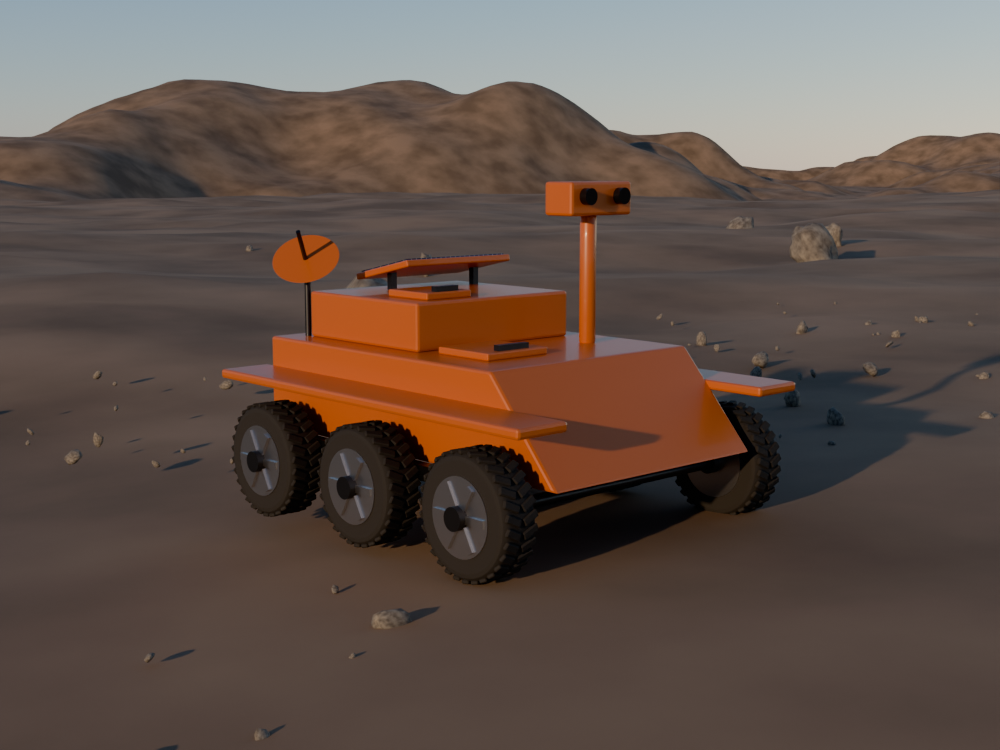
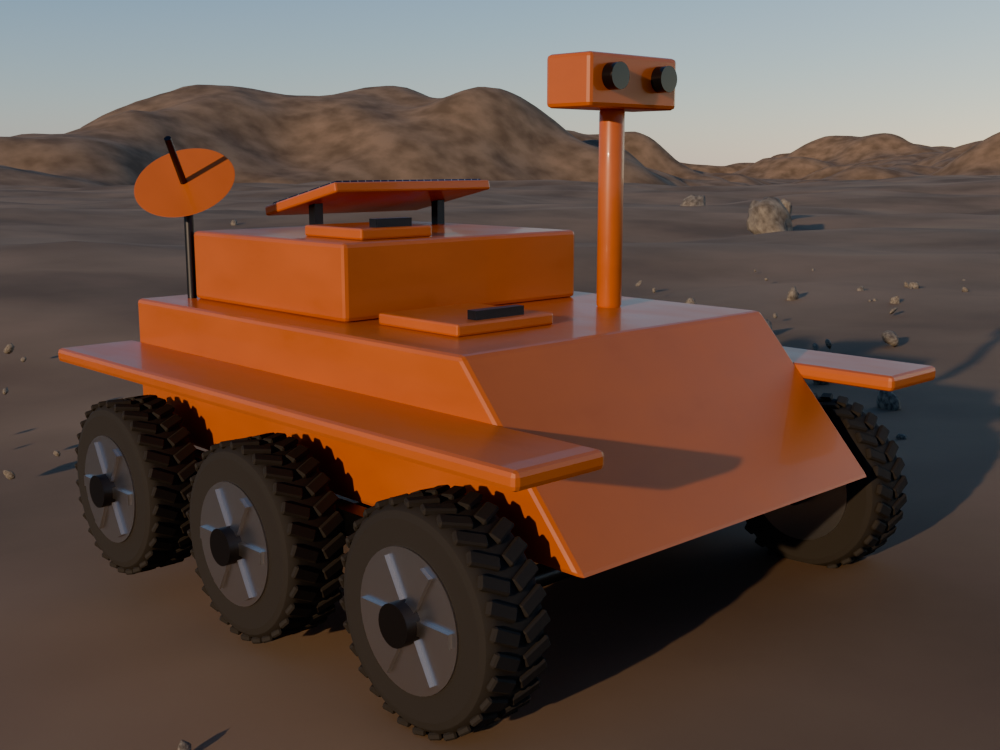
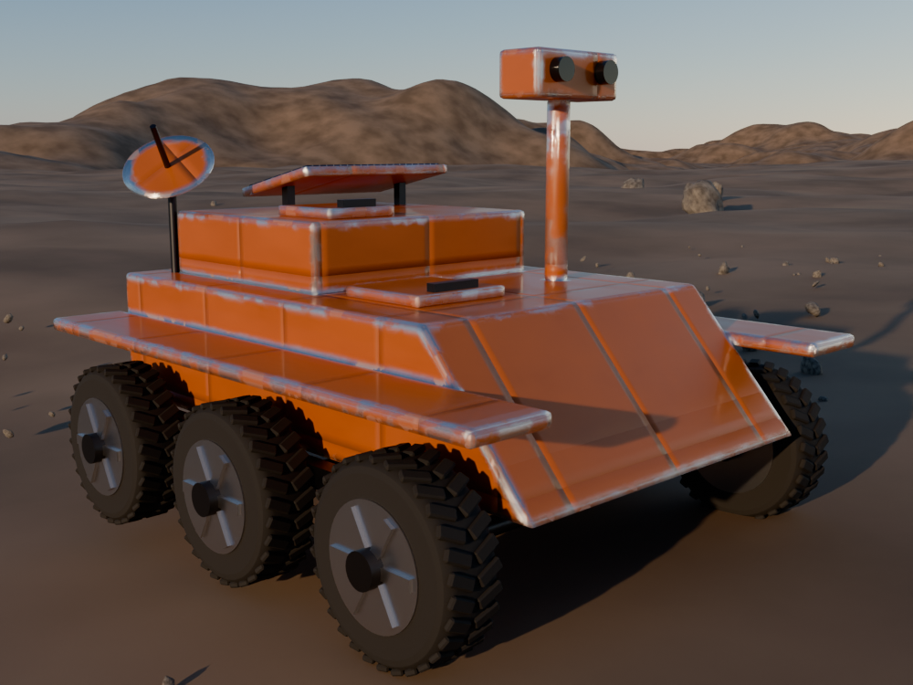
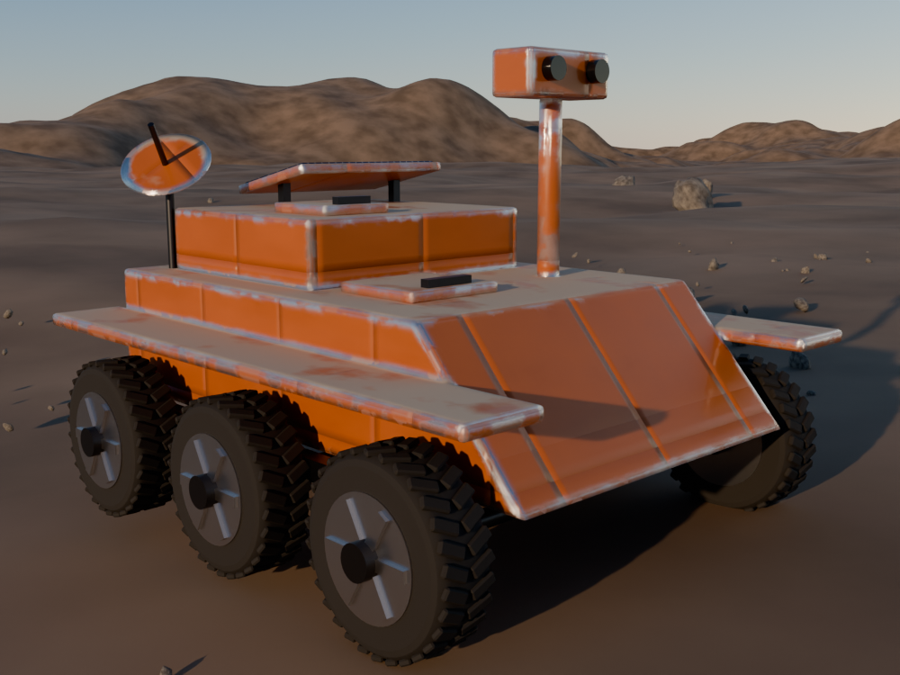
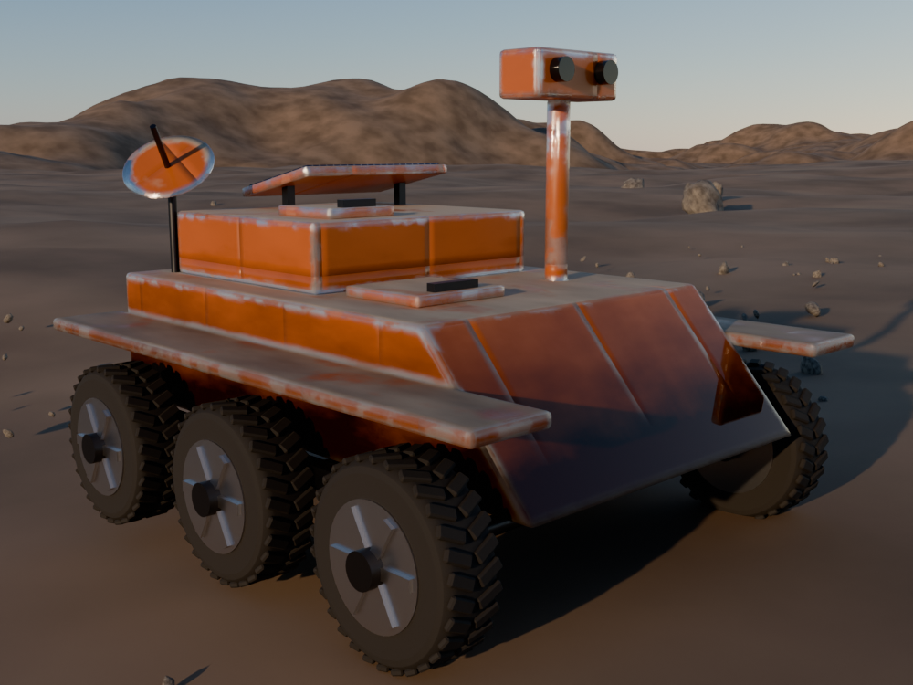
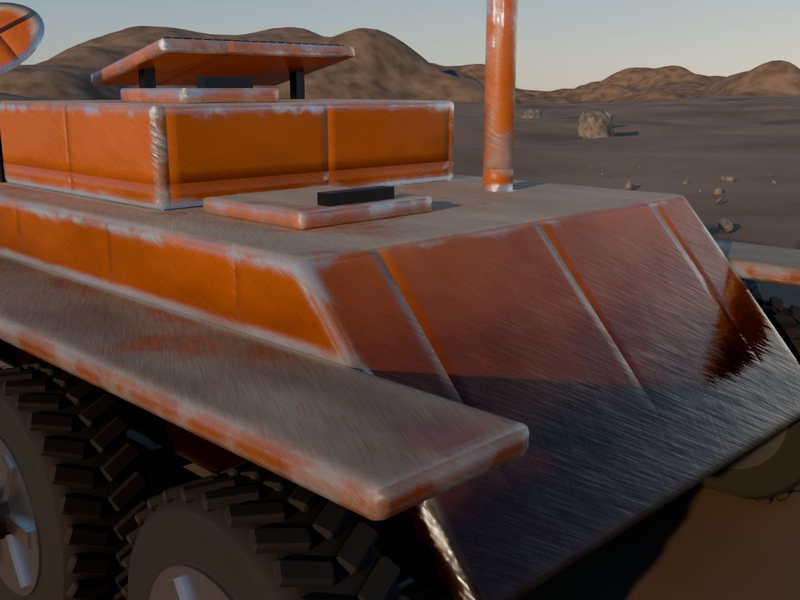

Products › BaseNode Packs › Material Layers › Tutorial: Rover hull
Rover hull
A rover parked in a stony desert, its orange paint worn to bare metal on every edge, its panels lined with seams, dust drifted on top, oily grime splashed up by the wheels, fine scratches all over. Its hull has no UV map: every texture is projected, and every layer is stacked in the material, a few lines at a time.
You will learn
- The craft. Build a material as a texture painter does, in layers: paint, bare metal revealed by an edge mask, dust that wins where it stands higher, grime laid with a blend mode per channel, a detail layer at another scale; and texture a mesh that has no UVs with triplanar projection, normal maps included.
- The language. A layer is one value, a
Bundleof seven channels, passed from graph to graph; a texture is passed to a graph as aclosure;"Paint" #orange { … }frames each layer's lines in the node editor. Each file is the one before plus a few lines: compare two steps to see what changed.
This page goes faster on the basics than Lunar ground, which starts from a flat square: a noise, a shader group, a material. Read it first if those are new to you.
Before you start
You need Blender 5, the Base Node add-on, and the Material Layers pack, sold by the author of Base Node apart from the open source project: it carries the two modules this tutorial assembles.
The steps below are free to read, copy and change; the modules they use are not.
| Module | Kind | What it gives |
|---|---|---|
material_layers | shader | A layer as one bundle of PBR channels (base color, metallic, roughness, normal, height, emission, coat); stacking by mask (layer_mix), by height (layer_height_blend), by blend mode per channel (layer_blend), a detail layer (layer_detail); normals combined by reoriented or whiteout normal mapping; layer_bsdf at the end. |
projections | shader | Textures without UVs: triplanar and box_map of a texture given as a closure, triplanar_normal for normal maps, detail_coords for a texture tiled at another scale. |
Every block below is a complete .bn file, its code beside the nodes it builds. Two ways to try a step:
- Drag it. Drag the file icon of its block, or its title, onto empty space in Blender's 3D Viewport, and keep Instantiate the Example: a new object carries
rover_hullat the 3D cursor. A click on the file icon downloads the file instead. - Paste it. Press the copy button of its block, open a Geometry Node editor, press Ctrl+Shift+V and pick Add as Modifier, on any mesh object: the graph makes its own hull.
Render with Cycles: the edge mask of step 3 comes from the Bevel node, which EEVEE does not have.
The pictures are rendered from these exact files by render.py, which adds the desert, the rocks and the wheels around the hull, bevels its edges a little, and gives it hatches, a solar panel, an antenna dish and two camera lenses: the painted parts take the step's own material, and none has a UV map either.
A stack of layers
A texture painter paints a material in layers: a base, then a layer over it where a mask says, then another. Each layer is a whole material, its colour, its roughness, its metal, its relief, and a mask lays all of them at once.
material_layers does the same in a shader. layer(…) packs the channels of one material into one value; each stacking graph takes two layers and a mask and gives one; layer_bsdf turns the last one into a Principled BSDF. A step of the stack is one call, its mask written once for every channel.
1. One layer of paint
The hull is a few boxes: a body whose nose slopes back, two fenders, a deck, a mast and its head. None of them has a UV map, and none will need one. The material is one layer, painted metal.
step1_paint.bn: hull_paint, HullPaint, rover_hull
layertakes every channel by name; those not given keep their defaults: no metal, no emission, mid height.- The normal is in object space. A normal map is usually read in the tangent space of a UV map. With no UV map there is none, so every layer here carries a normal of object space, given by
projection_frame, andlayer_bsdfreads it withnormal_space: Object.

2. A texture without UVs
Paint is never even: it is darker where it is thick, glossier where it was wiped. A texture gives that; to read a 2D texture, an image, the surface needs coordinates.
triplanar reads it three times, along x, y and z, and mixes the three by how much the surface faces each axis.
step2_triplanar.bn: hull_paint
- The texture is a closure. A shader group cannot take a texture as an input; it can take a function,
(vector: Vector) -> (color: Color), which it calls at each of the three coordinates. Here a noise stretched along y and flat in z, a 2D texture as an image would be; anImageTextureof your own fits the same way. sharpness: 8.0narrows the band where two projections blend: on a box, each face is read along its own axis, and the corners hide the seam.tonedarkens the paint and roughens it: one texture, two channels.

3. Bare metal on the edges
Paint wears off where things knock: the edges. A second layer, bare metal, goes over the paint where a mask finds them.
step3_edges.bn: hull_paint
- The mask.
Bevelgives the normal the surface would have if its edges were rounded 3 cm. Away from an edge it is the face's normal; on an edge it leans away from it.1 - rounded ⋅ normalis 0 on a face and grows on the edges: an edge mask, from the shape alone. - Broken up. Subtracting
chips, a fine noise, frays the mask: wear comes in chips, not in a ruled line.wearlets more of the edge through.NoiseTextureis a 3D texture, with a value at every point of space: it needs no projection. - Rounded, too. The same
Bevelnormal is nowsurface, so the edges catch the light as rounded ones would. layer_mixlays the metal over the paint by the mask, every channel at once.normals: Replacebecause both normals are of object space (more on that in step 7).
4. A normal map without UVs
Panels: seams every 40 cm, pressed into the paint. They are relief, not colour, so they come as a normal map, projected like the texture of step 2.
step4_panels.bn: hull_paint, seam
seamwrites a normal map by hand: 0.5 where the panel is flat, lower and higher on the two walls of a groove, as a baked normal map stores slopes.- Why not
triplanar? Mixing three normal maps as colours bends them all toward one direction.triplanar_normalturns each projection's normal to its own axis, adds it to the surface normal by whiteout, and only then mixes the three: a normal of object space, ready for the layer. - The paint takes
panels.normal; the bare metal keeps the roundedsurface: where the edges are worn, they stay smooth.

5. Dust stacked by height
Dust does not fall as a mask: it fills what is low first and leaves what stands high. Each layer now has a height, and layer_height_blend shows the top one where it stands higher than the bottom one.
step5_dust.bn: hull_paint
- Heights. The paint is about 0.5 high, a little more or less by its tone; the bare metal 0.3, below the paint it lost; the dust as high as its
drifts, a noise. Where the drifts stand above the hull, dust; elsewhere the hull shows through. - The mask raises the dust. At 0.5 the heights decide alone; under it less dust shows, over it more.
surface.zgives dust to what faces up, none to the walls;dustsets how much. contrastsets how sharp the rim of a drift is.driftsis a 3D noise again, read at the position in the object: no projection, as for the chips of step 3. Projections are for 2D textures.

6. Blend modes per channel
Grime splashed up by the wheels: it darkens the paint without hiding its colour, and it is oily, glossier than the paint under it. A mix cannot say that; blend modes can, one per channel.
step6_grime.bn: hull_paint
base_color_mode: Multiply: the colour under the grime is multiplied by it, darker but still orange, still metal on the chips.roughness_mode: Subtract: the grime's roughness, 0.4, is taken from the roughness under it: wet and glossy.metallic_mode: Multiply: grime has no metal, so the bare metal under it stops shining as metal.- The mask is the height in the object, from the bottom of the body up to about 80 cm, frayed by
tone;splashsets how much.

7. A detail layer at another scale
Last, fine scratches over everything: a detail layer, as game engines put on top of a material, read from a texture much finer than the others.
step7_detail.bn: hull_paint
- Another scale.
detail_coordstiles the coordinates eight times finer and turns them by half a radian: the scratches' tiles never line up with the smears'. It sits inside the closure, sotriplanarprojects the detail like the rest. - A detail changes, it does not cover.
layer_detailreads its colour and roughness around 0.5 grey: above brightens or roughens, below darkens or polishes, 0.5 changes nothing.detailfades it. detail_layer, notlayer. It makes the detail with the same inputs, but each one left out is the value that changes nothing: 0.5 grey, not the 0.8 oflayer, which would brighten the hull 1.6 times.- Reoriented, not whiteout. The scratches' normal is relative to the surface, (0, 0, 1) flat; the hull's is of object space, pointing anywhere. Reoriented normal mapping turns the detail as the hull's normal turns, so it works on every face. Whiteout adds slopes along x and y: right in tangent space, as
triplanar_normaluses it on each axis, wrong on a wall whose normal is x.

The knobs
Every input of hull_paint is on its node in the material; the calls inside it have theirs, in the Shader Editor.
| Where | Input | What it does |
|---|---|---|
hull_paint | paint, metal, dust_color, grime | The colour of each layer. |
hull_paint | wear, dust, splash, detail | How much of each layer shows. |
Bevel | radius | How wide the edges are, for the wear and for the light. |
triplanar, triplanar_normal | scale, sharpness, space | How large the texture, how narrow the blend between axes, stuck to the object or to the world. |
layer_height_blend | contrast | Soft or sharp rims of dust. |
layer_blend | …_mode | Normal, Multiply, Screen, Overlay, Add, Subtract, for each channel apart. |
detail_coords | scale, rotation | How much finer the detail, and how far turned. |
Try: on step 7, set base_color_mode of the grime to Screen: dried mud, pale, instead of oil. Set space of the triplanar calls to World, move the rover: the textures slide over it.
To paint your own model, give it HullPaint: nothing here needs its UVs. Keep the textures stuck to it with space: Object, and mind its scale: the seams are 40 cm apart in its own units.
Take it to Blender
The finished hull, in one file. Drag the card onto empty space in Blender's 3D Viewport and keep Instantiate the Example: a new object carries rover_hull. A click on the card downloads the file.
The steps before it, to start again from any of them:
The files, with the script that renders this page's pictures, are in examples/tutorials/rover_hull/.